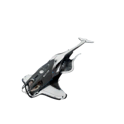

S scout, made by BoronS is small: The lightest ships. Lands inside a station or a carrier. What the sizes mean
Buy it for the streamer: !buy ship irukandji for 399 coins
Adopt one the streamer owns: !fleet lists them with their ID, then !buy adopt <ID> for 100 coins. It is renamed after you.
Faded Dreams Defences developed the Irukandji as a military scout for the Royal Boron Navy, drawing on its experience with Split encounters in the Faded Dreams system, which was by then already disconnected. As their first project under Queen Menelaus, the development helped the company to familiarise itself with the new technologies and production requirements provided by the Royal Boron Military Defence. The ship saw its first deployment in 787 (NT).
Menelaus Era ships were built between 785 (NT) and 798 (NT) as a second wave of more autonomous ships in preparation for the Jump Gate shutdowns. To reduce flight mass, the ships are mostly filled with air, requiring Boron crew to wear protective suits. The new Menelaus cabinet allowed corporations, working under a government contract, access to various classified technological advancements made by Royal Boron Military Defence research facilities. The ships designed with those technologies are less sturdy than the first wave of Atreus Era ships, but more manoeuvrable.
| HullDamage the ship can take before it is destroyed. | 2,600 |
|---|---|
| CrewPeople aboard at most. | 1 |
| Missile storageMissiles it carries for its launchers. | 0 |
| Weapon slotsGuns fixed to the front, aimed by turning the ship. | 2 |
| Turret slotsGuns that turn and fire at enemies on their own. | 0 |
| Shield slotsShield generators: the shield takes hits before the hull. | 1 |
| Engine slotsEngines, each of the ship's own size. | 3 |
| Top speedMetres per second, without boost or travel drive. It depends on the engine fitted: from the slowest to the fastest that fits. | 390 to 1,104 m/s |